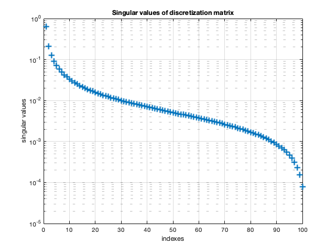
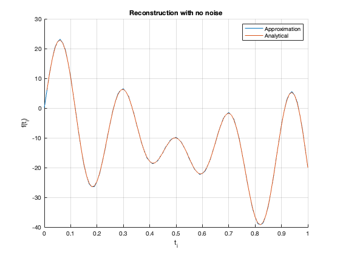
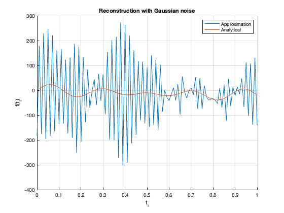
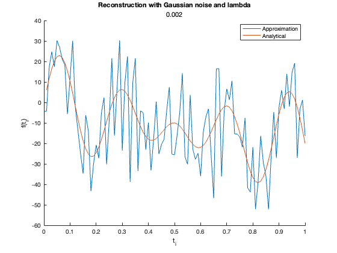
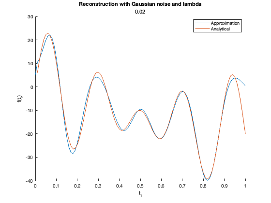
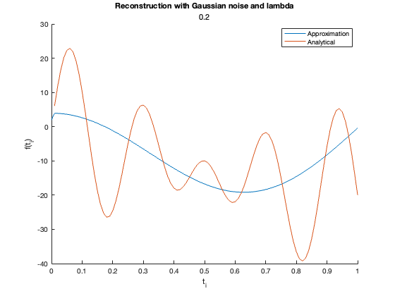

clear all; close all;
Let g : [0,1] → R be a differentiable function satisfying g(0) = 0. We assume to know the (noisy) values of g at the points tj = j/100, j = 1,2,..,100. The goal is to estimate the derivative of g at these same points and at the origin. This problem can be tackled by transforming it into a matrix equation: If we denote f = g′, then g(t) = \int_0_to_t f(s)ds, t ∈ [0,1]. The measurement y = (y1, y2, . . . , y100)^T ∈ R^100 is therefore y_j = g(t_j) + n_j, where nj is the measurement error. The point values x = (f(t0),f(t1),...,f(t100))^T ∈ R^^101 are the unknowns.
N = 100; T = 1;
(a) Write the forward problem in the form y = Ax + n via discretization. Create the system matrix A ∈ R^100×101 by using the trapezoidal rule
A = tril(ones(N + 1)) - 1/2 * eye(N + 1); A(1,:) = []; A(:, 1) = 1/2; A = 1/N * A;
(b) Characterize Ker(A) and Ran(A)^⊥.
(c) Use Matlab to compute the singular value decomposition and the Moore–Penrose pseudoinverse of A. Plot the singular values of A.
% svd [U L V] = svd(A); % Pseudo-inverse A_pinv = pinv(A); % plot of singular values figure(1); semilogy(diag(L), '+', 'LineWidth', 2); title('Singular values of discretization matrix'); xlabel('indexes'); ylabel('singular values'); grid on
(d) Consider the linear system (1) when g(t) = 2 cos(πt) sin^2(4πt) − 10t^2 i.e., form y by evaluating this function at the grid points and adding some measurement noise. Compute the minimum norm solution A^†*y with no noise and when each nj is an independent realization of a normally distributed random variable with zero mean and standard deviation 0.1. Plot the obtained approximations and compare them with the exact derivative. Does the use of the pseudoinverse give reasonable results in both cases?
t = linspace(1/N, 1, N); g = (2 * cos(pi*t) .* sin(4*pi*t).^2 - 10 * t.^2)'; f = -2 * pi * sin(pi*t) .* sin(4*pi*t).^2 + 16 * pi * sin(4*pi*t) .* cos(4*pi*t) .* cos(pi*t) - 20*t; % Solution with no noise: y = A_pinv * g; % plot solution without noise figure(2); hold on plot([0, t], y, 'LineWidth', 1); plot(t, f, 'LineWidth', 1); title('Reconstruction with no noise'); legend('Approximation', 'Analytical'); xlabel('t_i'); ylabel('f(t_i)'); grid on hold off % Solution with Gaussian noise: s = 0.1; noise = s * randn(N, 1); g_n = g + noise; y_n = A_pinv * g_n; % plot solution with Gaussian noise figure(3); hold on plot([0, t], y_n, 'LineWidth', 1); plot(t, f, 'LineWidth', 1); title('Reconstruction with Gaussian noise'); legend('Approximation', 'Analytical'); xlabel('t_i'); ylabel('f(t_i)'); grid on hold off % we observe that solutions without Gaussian noise is almost perfect % approximation of the analytical derivative, while solution with gaussian % noise is very distored. Clearly, the second solution is not really % reasonable, while the first one might be just too good. 
(e) Try an alternative approach and approximately solve (1) in the noisy case by resorting to singular value truncation (the truncated SVD solution). Produce three reconstructions: When ‘inverting’ A, take into account the singular values that are larger than (i) 0.002, (ii) 0.02 and (iii) 0.2, respectively. Plot the obtained approximations and compare them with the exact derivative. Which of the three spectral cut-offs gives the best reconstruction?
lambdas = [0.002, 0.02, 0.2]; diagonal = diag(L); for l = 1:3 % compute truncated svd n = max(find(diagonal > lambdas(l))); sv = [1./diagonal(1:n); zeros(N-n, 1)]; A_pinv_n = V * [diag(sv); zeros(1, N)] * U'; % solve inverse problem yn_t = A_pinv_n * g_n; % plot the solution figure(3 + l); hold on plot([0, t], yn_t, 'LineWidth', 1); plot(t, f, 'LineWidth', 1); title('Reconstruction with Gaussian noise and lambda', lambdas(l)); legend('Approximation', 'Analytical'); xlabel('t_i'); ylabel('f(t_i)'); end hold off % from the plots it is clear that solution with lambda = 0.02 gives the % best reconstruction.  